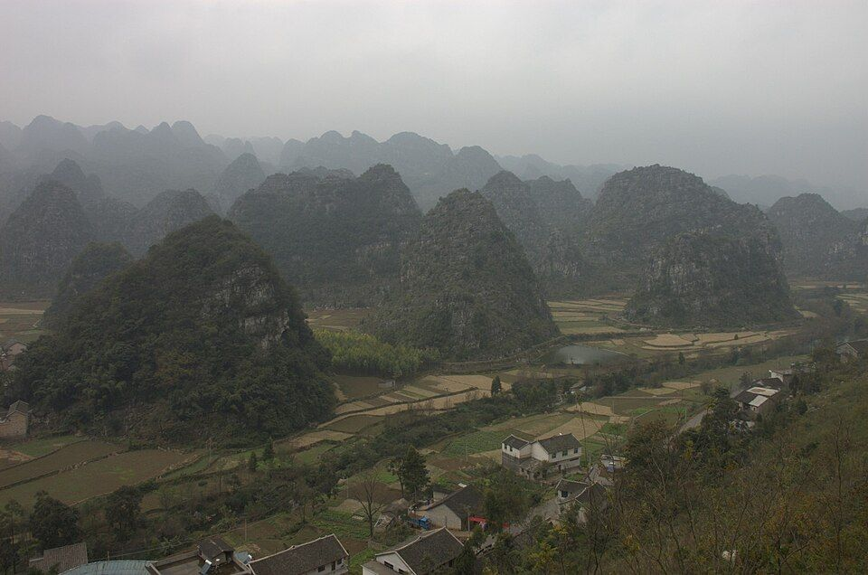
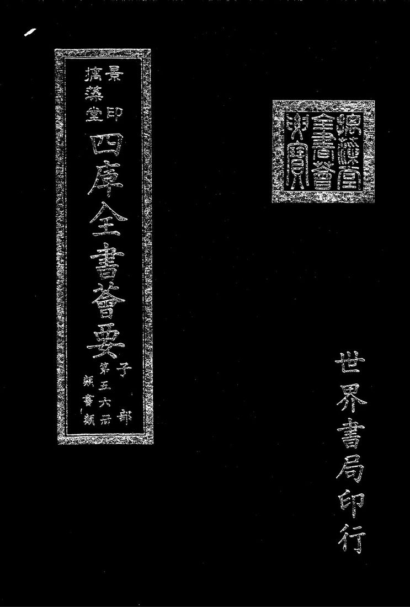
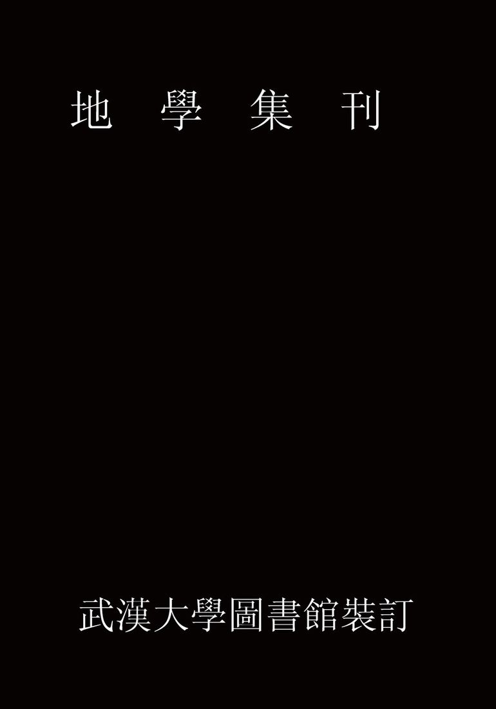
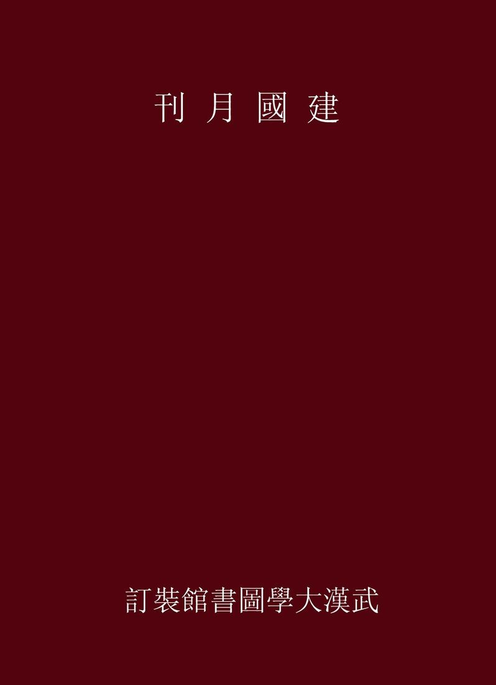
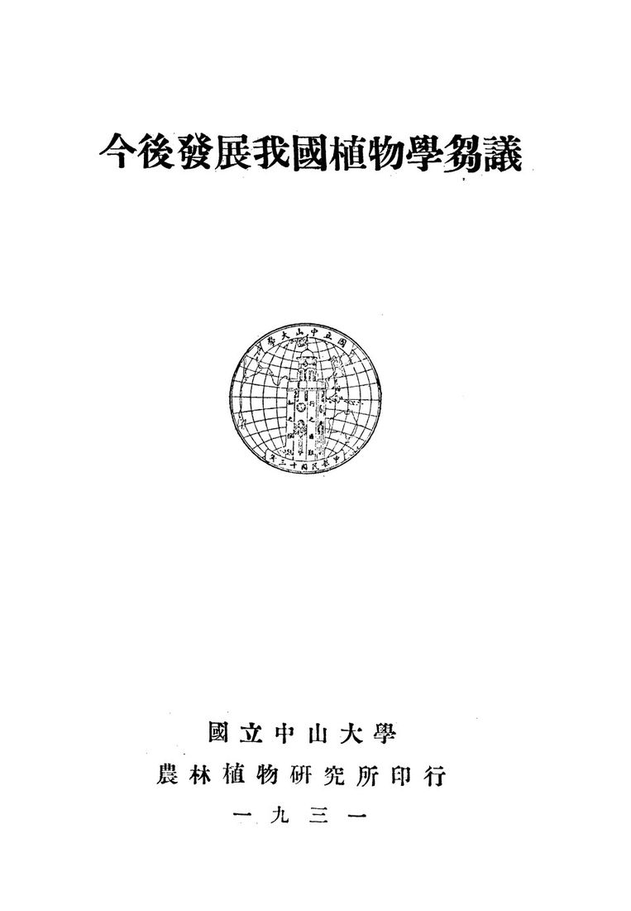
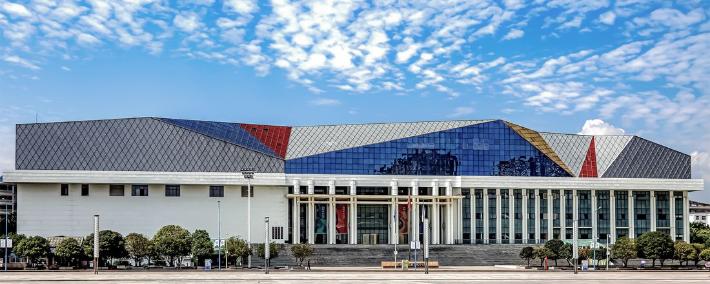
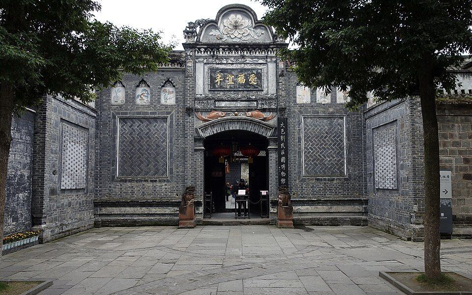

先看结论
-
兴义适合的玩法
- 峰林田园线万峰林、上纳灰、中纳灰、下纳灰、八卦田、将军峰、万佛寺、万峰林骑行
- 峡谷瀑布线马岭河峡谷、天星画廊、峡谷电梯、马岭河漂流、峰林大桥
- 湖泊度假线万峰湖、红椿码头、游船、湖边垂钓、南盘江沿线
- 布依风情线峰林布依、南龙布依古寨、纳灰村寨、布依八音坐唱、蜡染/扎染体验
- 地质科普线兴义世界地质公园、贵州龙地质公园博物馆、泥凼石林、雨补鲁天坑
- 城市吃喝线桔山广场、街心花园、兴义商城/梦乐城、夜市、羊肉粉、杠子面、刷把头
-
必去优先级
- 第一梯队万峰林、马岭河峡谷、万峰湖、峰林布依、下纳灰村、贵州龙地质公园博物馆
- 第二梯队黔西南州博物馆、刘氏庄园、何应钦故居、南龙布依古寨、雨补鲁天坑、泥凼石林
- 时间多再去鲁布格深谷湖、清水河、安龙招堤、贞丰双乳峰、晴隆二十四道拐、兴仁放马坪
- 亲子优先贵州龙地质公园博物馆、黔西南州博物馆、万峰林轻骑行、峰林布依夜游、万峰湖游船
-
平台高频玩法
- 小红书风格万峰林稻田、将军峰蛋炒饭、下纳灰村咖啡、八卦田航拍、峰林布依夜景、马岭河瀑布
- B 站 Vlog 风格万峰林骑电动车、吃张晓君/周红亚羊肉粉、马岭河峡谷、万峰湖游船、住万峰林民宿
- 抖音路线风格万峰林观光车、下纳灰村、蛋炒饭、峰林布依打铁花/夜景、马岭河峡谷瀑布、桔山广场夜市
-
游玩原则
- 兴义的核心不是城市商业，而是峰林、峡谷、湖泊、布依村寨和小城吃喝
- 万峰林值得住一晚，早晚光线比正午好很多
- 马岭河峡谷最看水量，丰水期更震撼，雨天要看景区安全公告
- 万峰湖更适合慢游、游船、垂钓和发呆，不适合赶行程硬塞
- 兴义景点分散，打车和包车比纯公交更省心
快速决策索引
全年月份速查
季节限定景观
景点营业时间和票价速查
-
使用说明
- 以下为常见开放时间和成人基础票价，节假日、夜场、演出、漂流、游船、观光车会调整
- 免费景点也可能需要登记或预约，开放式村寨/街区以现场管理为准
- 贵州景区票价以官方购票页、贵州省政府定价清单、景区公告为准
-
万峰林片区
- 万峰林景区旺季常见 8:00-18:00，淡季常见 8:30-17:30；门票常见旺季 70 元、淡季 60 元，观光车全程常见 50 元
- 万峰林观光车景区内交通项目，常见全程 50 元；是否必须乘坐按入口和游线安排
- 下纳灰/中纳灰/上纳灰村开放式村寨，免费；餐饮、咖啡、民宿、停车按各自收费
- 八卦田/将军峰等观景点随万峰林景区游线参观，费用按景区门票/观光车执行
- 万佛寺开放和收费以寺院现场公告为准，常见为免费或随万峰林路线顺路参观
- 万峰林骑行道开放式乡村道路，免费；自行车/电动车租赁按商家收费
- 万峰林滑翔伞/越野/球幕影院等项目：营业和价格按项目商家当日公告
-
马岭河片区
- 马岭河峡谷常见 8:00-17:30；门票常见旺季 70 元、淡季 60 元
- 马岭河峡谷电梯常见单程 30 元、往返 40 元；以现场公告为准
- 马岭河漂流夏季为主，价格随漂流段和套票变化，强天气依赖，以官方购票页为准
- 峰林大桥公路桥梁外观/车行经过为主，不是常规收费景区；停车拍照注意安全和交通管控
-
万峰湖片区
- 万峰湖景区常见 8:00-17:30；游船/码头/观景台套票价格随线路变化，以官方购票页为准
- 红椿码头码头开放和船班以当天水位、天气和运营公告为准；游船另收费
- 万峰湖垂钓/水上项目按俱乐部、船家或景区项目收费，出发前单独确认
-
布依和夜游
- 峰林布依景区常见白天到夜间开放，夜景和演艺为核心；门票、夜场和演出票以官方购票页为准
- 南龙布依古寨村寨型景点，开放和收费以现场管理为准；多为白天参观更合适
- 纳具村/布依村寨开放式村寨为主，免费或低价停车；民俗体验/餐饮另计
-
地质、博物馆和人文
- 黔西南州博物馆9:00-17:00，除夕闭馆，免费开放
- 贵州龙地质公园博物馆常见 9:00-17:00，免费开放；以兴义地质公园/博物馆公告为准
- 刘氏庄园常见白天开放，常见凭身份证免费登记；开放时间以现场公告为准
- 何应钦故居常见 9:00-17:00，票价以现场/购票页为准
- 泥凼石林开放式石林/乡镇景点属性较强，收费和开放以现场管理为准
- 雨补鲁天坑乡村天坑景点，开放和收费以当地公告/现场为准
- 贵州醇景区/奇香园常见 8:30-17:00，票价和项目以官方购票页或现场公告为准
-
城市街区、夜市和商圈
- 桔山广场开放式城市广场，全天可逛，免费
- 街心花园开放式城市公共空间，免费；周边店铺按各自营业
- 兴义商城/梦乐城等商场商场多为 10:00-22:00 左右，以各商场公告为准
- 夜市/烧烤街夜间摊位为主，免费；摊位和营业位置会变化
-
周边一日
- 清水河景区政府定价清单常见门票 35 元；开放和交通以现场公告为准
- 安龙招堤政府定价清单常见门票 15 元；开放以景区公告为准
- 贞丰双乳峰政府定价清单常见门票 65 元，观光车全程常见 30 元；以官方公告为准
- 晴隆二十四道拐政府定价清单常见门票 60 元，交通项目另计；以景区公告为准
- 兴仁放马坪高山草原政府定价清单常见门票 30 元，交通项目另计；以景区公告为准
- 鲁布格深谷湖跨区域湖峡景观，船班、票价、交通以当地码头/景区公告为准
行前准备
-
预约和核对
- 万峰林提前看是否需要分时预约、观光车运营和入园口
- 马岭河峡谷雨季必须看开放、漂流、水位和峡谷步道公告
- 万峰湖提前确认船班、码头、天气和返程交通
- 峰林布依提前看夜游、演出、打铁花和闭园时间
- 贵州龙地质公园博物馆/黔西南州博物馆：看开放日和是否临时闭馆
-
穿搭和装备
- 全年舒适步行鞋、防晒、帽子、墨镜、充电宝
- 雨季雨伞/雨衣、防滑鞋、防水袋
- 峡谷鞋底防滑，注意湿滑台阶
- 骑行防晒袖套、轻便外套，电动车看电量和刹车
- 冬季早晚温差大，民宿房间保暖提前看评价
-
交通原则
- 兴义市区到万峰林不远，打车最省心
- 马岭河、万峰湖、地质博物馆、南龙布依古寨相对分散，包车/自驾效率高
- 兴义南站和机场离万峰林方向更顺，住宿可按到达交通选
- 景区之间不要全靠临时公交，末班和班次可能影响体验
住宿建议
-
万峰林/下纳灰/纳灰村寨
- 适合想看日出日落、稻田、油菜花、慢住、拍照
- 优点离核心景观近，早晚不用赶路，民宿氛围好
- 缺点餐饮选择不如市区多，热门季节价格高
- 关键词下纳灰、上纳灰、中纳灰、将军峰、八卦田、田景房
-
兴义市区/桔山广场/梦乐城
- 适合重视吃喝、夜市、交通、性价比
- 优点羊肉粉和夜宵选择多，酒店性价比高
- 缺点离万峰林早晚光线点需要打车
- 关键词桔山广场、梦乐城、街心花园、兴义商城、州医院周边
-
马岭河峡谷附近
- 适合只为马岭河峡谷或第二天早进景区
- 优点离峡谷近
- 缺点整体住宿和吃喝选择少，通常不如市区/万峰林方便
-
万峰湖/红椿码头周边
- 适合垂钓、湖边度假、慢游
- 优点湖景安静
- 缺点交通不便，餐饮和夜生活少
-
兴义南站/机场附近
- 适合晚到早走、赶高铁/飞机
- 优点交通衔接省心
- 缺点旅行氛围一般，不适合连续住很多晚
地图分区
-
万峰林田园区
- 核心点万峰林、下纳灰、中纳灰、上纳灰、八卦田、将军峰、万佛寺、万峰林骑行道
- 玩法观光车、骑行、电动车、民宿发呆、咖啡、蛋炒饭、日出日落
- 适合1-2 天慢游
-
马岭河峡谷区
- 核心点马岭河峡谷、天星画廊、峡谷电梯、漂流、峰林大桥
- 玩法峡谷步道、瀑布、丰水期摄影、漂流
- 适合半天到 1 天
-
万峰湖区
- 核心点万峰湖、红椿码头、游船、湖边村寨
- 玩法游船、垂钓、湖边发呆、拍山水
- 适合半天到 1 天，不赶时间更好
-
兴义市区
- 核心点桔山广场、街心花园、黔西南州博物馆、夜市、商圈、羊肉粉店
- 玩法吃喝、补给、雨天室内、城市中转
-
地质和人文区
- 核心点贵州龙地质公园博物馆、刘氏庄园、何应钦故居、泥凼石林、雨补鲁天坑
- 玩法地质科普、民国建筑、乡镇自然景观
-
周边联动区
- 核心点安龙招堤、贞丰双乳峰、晴隆二十四道拐、兴仁放马坪、鲁布格深谷湖
- 玩法黔西南环线、自驾、两日以上深度
核心景点
-

开放图库 万峰林游玩攻略最佳时间：2-3 月油菜花、5-8 月青绿稻田、9-10 月金色稻田、冬季晴天淡季；看点：锥状喀斯特峰林、田园、八卦田、布依村寨、将军峰- 最佳时间2-3 月油菜花、5-8 月青绿稻田、9-10 月金色稻田、冬季晴天淡季
- 看点锥状喀斯特峰林、田园、八卦田、布依村寨、将军峰
- 玩法景区观光车看全景，村里骑行看细节，住一晚看早晚光线
- 搭配下纳灰村、峰林布依、万峰湖
- 值不值得专程值得，兴义第一核心
- 提醒不要只坐观光车匆匆走，村寨慢逛才是精华
-
下纳灰村
- 最佳时间春季油菜花、夏季稻田、秋季金色田园
- 看点布依村寨、田园路、民宿、咖啡、骑行
- 玩法住民宿、早晨散步、下午咖啡、傍晚拍峰林
- 值不值得专程值得，适合慢游
- 提醒热门民宿和咖啡店旺季提前订
-
八卦田
- 最佳时间油菜花季、稻田季、秋收季
- 看点漏斗地貌形成的田园纹理
- 玩法观光车观景台、航拍、长焦摄影
- 提醒航拍需遵守景区和村寨管理
-

开放图库 将军峰游玩攻略最佳时间：上午和傍晚；看点：峰林地标、蛋炒饭聚集点、田园视角- 最佳时间上午和傍晚
- 看点峰林地标、蛋炒饭聚集点、田园视角
- 玩法看完景吃蛋炒饭，顺路骑行
-

开放图库 马岭河峡谷游玩攻略最佳时间：6-9 月丰水期，春秋也适合步行；看点：峡谷地缝、瀑布群、钙化壁、天星画廊- 最佳时间6-9 月丰水期，春秋也适合步行
- 看点峡谷地缝、瀑布群、钙化壁、天星画廊
- 玩法峡谷步道、拍瀑布、坐电梯省体力，夏季可看漂流
- 搭配贵州龙地质公园博物馆、万峰湖
- 值不值得专程值得，和万峰林互补
- 提醒雨季水量大但风险也高，强降雨时不要硬去
-

开放图库 万峰湖游玩攻略最佳时间：10 月至次年 4 月晴天，夏季也可避暑；看点：湖面、岛屿、峰林倒影、南盘江水系- 最佳时间10 月至次年 4 月晴天，夏季也可避暑
- 看点湖面、岛屿、峰林倒影、南盘江水系
- 玩法游船、垂钓、湖边慢游
- 值不值得专程时间多值得；只有一天优先万峰林和马岭河
- 提醒交通和船班是关键，别临时晚到
-

开放图库 峰林布依游玩攻略最佳时间：傍晚到夜间，春秋最舒服；看点：布依建筑、夜景、演艺、非遗体验、打铁花- 最佳时间傍晚到夜间，春秋最舒服
- 看点布依建筑、夜景、演艺、非遗体验、打铁花
- 玩法下午晚些入园，夜景亮灯后体验更完整
- 值不值得专程喜欢夜游/民族风情值得
- 提醒门票和演出价格不低，先看当日节目表
-
来源图 贵州龙地质公园博物馆游玩攻略最佳时间：全年，雨天和亲子尤其适合；看点：贵州龙化石、三叠纪海生爬行动物、兴义世界地质公园科普- 最佳时间全年，雨天和亲子尤其适合
- 看点贵州龙化石、三叠纪海生爬行动物、兴义世界地质公园科普
- 搭配马岭河峡谷、万峰湖
- 值不值得专程亲子和地质爱好者值得
-

来源图 黔西南州博物馆游玩攻略最佳时间：全年，雨天适合；看点：黔西南民族文化、历史文物、地方展陈- 最佳时间全年，雨天适合
- 看点黔西南民族文化、历史文物、地方展陈
- 搭配桔山广场、市区吃喝
- 值不值得专程市区有空值得，适合了解当地
-

开放图库 刘氏庄园游玩攻略最佳时间：全年，上午或下午；看点：屯堡式建筑、民国地方家族史、中西合璧建筑- 最佳时间全年，上午或下午
- 看点屯堡式建筑、民国地方家族史、中西合璧建筑
- 搭配万峰林或市区人文线
- 值不值得专程喜欢老建筑和地方史值得
-
何应钦故居
- 最佳时间春秋，和泥凼石林同线
- 看点民国人物故居、乡镇建筑、历史背景
- 搭配泥凼石林
- 值不值得专程历史爱好者值得，一般游客可作为顺路
-
泥凼石林
- 最佳时间春秋、晴天
- 看点石林地貌、乡野喀斯特
- 搭配何应钦故居
- 提醒交通和现场管理提前确认
-
雨补鲁天坑
- 最佳时间春秋、晴天
- 看点天坑村落、喀斯特乡村、自然地貌
- 玩法自驾/包车更合适
- 提醒小众点，不要雨天硬走山路
-
南龙布依古寨
- 最佳时间春秋、节庆时
- 看点布依村寨、传统建筑、民族文化
- 搭配万峰林或安龙方向
-
贵州醇景区/奇香园
- 最佳时间春季花开、晴天
- 看点园林、花木、酒文化、休闲拍照
- 适合市区轻松半日
街区、夜市和市场
-
桔山广场
- 最佳时间晚上
- 看点城市广场、周边吃喝、夜市氛围
- 可吃剪粉、烧烤、冰粉、羊肉粉、夜宵
-
街心花园
- 最佳时间白天顺路，晚上吃喝
- 看点老城公共空间、周边小吃
-
兴义商城/梦乐城/桔山商圈
- 最佳时间雨天、晚上、补给
- 看点商场、餐饮、奶茶、超市
-
万峰林村寨小店
- 最佳时间下午到傍晚
- 看点咖啡、民宿餐、蛋炒饭、农家菜
- 提醒景区餐饮价格高于市区，先看菜单
-
夜市/烧烤街
- 最佳时间5-10 月夜晚
- 可吃烧烤、烤鱼、剪粉、炒饭、凉粉、冰粉
- 提醒摊位变化快，按当晚热闹区域选择
美食总表
-
必吃特色
- 兴义羊肉粉早餐灵魂，汤鲜、酱香、羊肉味明显
- 杠子面面条筋道，是兴义传统名小吃
- 刷把头形似小刷子的传统点心/小吃
- 鸡肉汤圆咸口特色，适合想试本地味的人
- 万峰林蛋炒饭将军峰一带代表性游客餐，配小菜和蘸水
- 剪粉兴义夜市和小吃常见，夏天很舒服
- 饵块粑布依特色，可煎可炒可煮
- 三合汤糯米饭、豆类、脆哨等组合的汤泡饭风味
- 五色糯米饭布依节庆和村寨体验常见
- 酸笋/酸汤黔西南酸味体系，配鱼、肉、农家菜
-
正餐方向
- 布依农家菜
- 酸汤鱼/酸汤牛肉
- 烤鱼
- 黑山羊火锅
- 辣子鸡
- 腊肉炒折耳根
- 野菜/时令蔬菜
-
夜宵
- 烧烤
- 烤鱼
- 炒粉/剪粉
- 冰粉
- 炸洋芋
- 豆腐圆子
-
饮品和甜食
- 冰粉
- 糯米冰浆/本地冷饮
- 奶茶/果茶
- 村寨咖啡
- 冲冲糕
-
伴手礼
- 贵州醇酒
- 兴义羊肉粉料包/米粉
- 薏仁米
- 布依蜡染/扎染小物
- 贵州辣椒制品
- 本地腊肉/香肠
餐厅和店铺
-
张晓君羊肉粉
- 类型羊肉粉
- 适合早餐或上午加餐
- 提醒口味偏本地，羊味接受度看个人
-
周红亚羊肉粉/羊肉馆
- 类型羊肉粉/羊肉方向
- 适合想试兴义羊肉粉代表店
-
将军峰黄秀蛋炒饭
- 类型万峰林蛋炒饭
- 适合万峰林游玩中午顺路吃
- 提醒游客多，饭点可能排队
-
鄢亮黑山羊
- 类型黑山羊/羊肉方向
- 适合多人正餐
-
安龙美美剪粉
- 类型剪粉
- 适合小吃、夜宵、轻食
-
顶效/兴义深夜羊肉粉
- 类型夜宵羊肉粉
- 适合晚到或夜宵
- 提醒具体营业时间以门店当日为准
-
万峰林民宿餐厅
- 类型农家菜/布依菜/咖啡
- 适合住万峰林时解决晚饭和下午茶
- 提醒热门民宿餐厅最好提前问是否接待非住客
博物馆和展馆
-
来源图 黔西南州博物馆游玩攻略时间：1-2 小时- 类型地方综合博物馆
- 重点民族文化、地方历史、馆藏文物
- 时间1-2 小时
-
来源图 贵州龙地质公园博物馆游玩攻略时间：1.5-2.5 小时- 类型地质科普/化石博物馆
- 重点贵州龙、三叠纪、海生爬行动物、喀斯特地貌
- 时间1.5-2.5 小时
-
兴义世界地质公园相关展陈
- 类型地质公园科普体系
- 重点峰林、峡谷、化石、喀斯特
-
开放图库 刘氏庄园游玩攻略优先安排早晚光线和低峰时段；出发前复核开放时间、门票、预约和天气。- 类型历史建筑/地方家族史
- 重点屯堡式建筑群、民国历史
-
何应钦故居
- 类型人物故居
- 重点民国历史、地方人物
自然、远郊和周边
-
鲁布格深谷湖
- 适合湖峡风光、自驾、慢游
- 时间半天到 1 天
- 提醒路线和船班提前确认
-
清水河景区
- 适合小众自然风光、顺路自驾
- 提醒交通和开放以现场为准
-
安龙招堤
- 适合荷花、历史园林、安龙县城一日
- 最佳时间夏季荷花，春秋散步
-
贞丰双乳峰
- 适合喀斯特地貌、顺路打卡
- 提醒景区商业化较明显，按兴趣选择
-
晴隆二十四道拐
- 适合抗战公路、山路地标、历史摄影
- 提醒自驾注意山路安全
-
兴仁放马坪高山草原
- 适合草原、亲子、露营、夏季避暑
- 提醒离兴义有距离，适合自驾一日
-
安龙国家山地户外运动示范公园
- 适合户外运动、轻度拓展
- 提醒项目开放以当日为准
路线模板
远郊一日游决策
交通细节
-
到达兴义
- 兴义万峰林机场适合飞机抵达，离市区和万峰林方向都不算远
- 兴义南站高铁站，盘兴高铁开通后更适合作为到达口岸
- 兴义站/汽车站按实际车次选择，注意和兴义南站区分
-
市区到万峰林
- 打车最省心，车程通常不长
- 也可公交/客运接驳，但班次和等待时间要预留
-
万峰林内部
- 景区观光车适合看全景
- 村寨慢游适合租电动车/自行车
- 电动车注意续航、刹车和停车点
-
市区到马岭河
- 打车/包车方便
- 峡谷游玩结束后再去万峰湖要预留足够车程
-
市区到万峰湖
- 建议包车/自驾
- 船班和返程车是关键，不建议临时傍晚才去
-
兴义周边
- 安龙、贞丰、晴隆、兴仁方向都适合自驾或包车
- 山区道路雨天谨慎，别压夜路
避坑和取舍
-
不要只给兴义留半天
- 万峰林、马岭河、万峰湖至少需要 2 天体验更完整
-
不要正午暴晒骑行万峰林
- 早晚更舒服，也更出片
-
不要雨天硬走小众山路
- 天坑、石林、湖边和峡谷都受雨季影响
-
不要忽略观光车和二消成本
- 万峰林观光车、马岭河电梯、万峰湖游船、峰林布依演艺都可能另计
-
不要把万峰湖当短平快打卡点
- 它更适合慢游，不适合赶在傍晚临时跑
-
不要只吃景区餐
- 兴义市区羊肉粉、杠子面、夜市更有本地味
-
不要错过早晚光线
- 万峰林最漂亮的时间往往不是中午
-
不要把“兴义”和“黔西南所有景点”混为一天
- 贞丰、晴隆、兴仁、安龙都需要额外交通时间